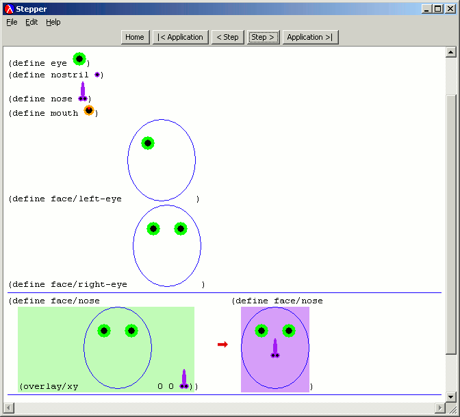

DrScheme supports the use of images as ordinary Scheme values. The following program demonstrates the construction of a face through a sequence of operations.
The Stepper (which we discuss later) supports images as values, so a programmer can see the above program in action.
|  |
Program source files can also contains images. DrScheme saves such files in a custom, cross-platform portable format. Images are first-class values, which means programmers can pass them to and return them from functions, store them in data structures, and so on. Use Special | Insert Image ... to insert an image into the file being edited in the Definitions window.
Naturally, programs can include external image files and edit them using code.